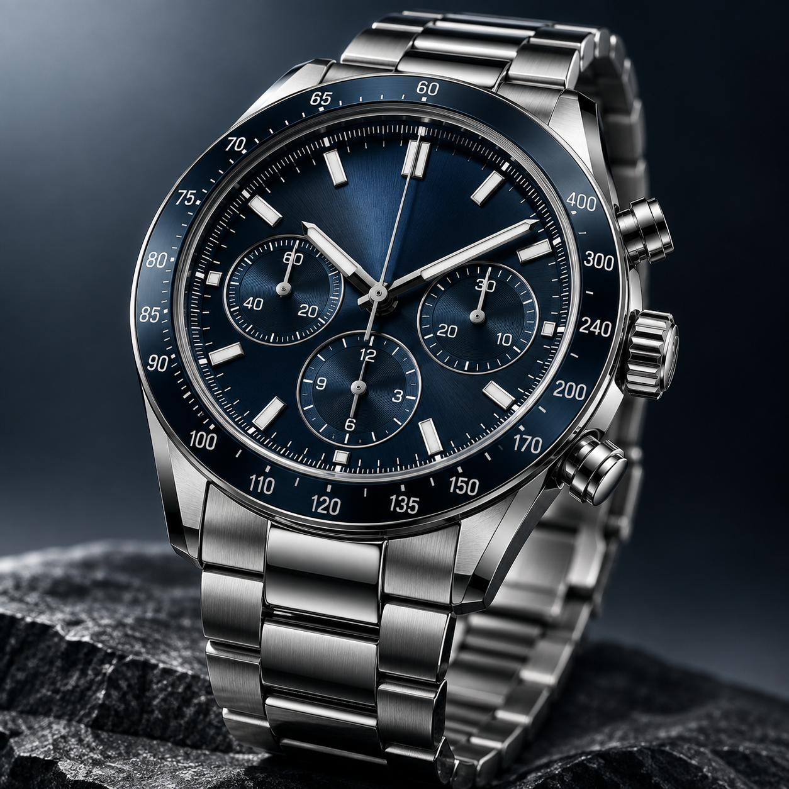

VERIE HORLOGERIE
Somos una marca que vende relojes 100% oficiales en estado nuevo o usados. Tenemos un catalogo unico en el que se puede ver el estado de los relojes mediante imagenes.
El arte de medir el tiempo: Un reloj no es simplemente un accesorio; es una pieza que combina disenio, precision y personalidad. Desde los modelos clasicos hasta los deportivos, cada reloj tiene su propia esencia y esta pensado para acompaniar diferentes momentos. En VERITE buscamos reunir piezas que destaquen por sus materiales, detalles y mecanismos, ofreciendo una seleccion donde la elegancia y la precision se encuentran. Porque el tiempo pasa, pero el estilo permanece.
Mira nuestra coleccion de relojes de alta gama
Aurelius Noir

Especificaciones:
Modelo elegante de estilo clasico, pensado para ocasiones formales. Cuenta con movimiento automatico calibre AX-210 y una reserva de marcha de 72 horas. Su caja esta fabricada en oro amarillo de 18 quilates, con un diametro de 40 mm y un grosor de 9,2 mm. Tiene cristal de zafiro con tratamiento antirreflejo, esfera negrwa con acabado sunburst y correa de cuero negro. Incluye funciones de horas, minutos, segundos y fecha. Ofrece una resistencia al agua de hasta 50 metros y un peso aproximado de 92 gramos. Precio ficticio: USD 12.900.
Chronos Azure GT

Especificaciones:
Reloj deportivo de lujo con movimiento automatico cronografo calibre CX-500. Posee una reserva de marcha de aproximadamente 60 horas. Su caja esta fabricada en acero inoxidable 316L, con un diametro de 42 mm y un grosor de 13,1 mm. Utiliza cristal de zafiro antirreflejo y presenta una esfera azul marino con acabado cepillado. Cuenta con brazalete de acero inoxidable y funciones de horas, minutos, segundos, cronografo y taquimetro. Tiene una resistencia al agua de hasta 150 metros y un peso aproximado de 178 gramos. Precio ficticio: USD 9.800.
Eclat Skeleton 01

Especificaciones:
Modelo de alta relojeria con disenio skeleton, que permite observar gran parte de su mecanismo interno. Utiliza un movimiento automatico calibre ES-88 con una reserva de marcha de hasta 80 horas. La caja esta fabricada en oro rosa de 18 quilates y tiene un diametro de 41 mm y un grosor de 10,8 mm. Cuenta con cristal de zafiro tanto en la parte delantera como en la trasera. Tiene correa de cuero marron y componentes internos visibles con acabados decorativos. Incluye funciones de horas, minutos y segundos. Su resistencia al agua es de 50 metros y pesa aproximadamente 105 gramos. Se trataria de una edicion limitada a 250 unidades. Precio ficticio: USD 24.500.
Mira nuestros nuevos ingresos
Sobre nosotros
Somos una relojeria que se encarga de buscar los mejores relojes en los mejores estados para que nuestros clientes puedan obtener lo que deseen a un buen precio calidad. Partiendo desde el principio de: "La confianza lo es todo" construimos lo que hoy en dia es VERITE HORLOGERIE, un lugar en el cual tu reloj y tu dinero esta en buenas manos.
Contactanos
+54 9 11 1111-1111